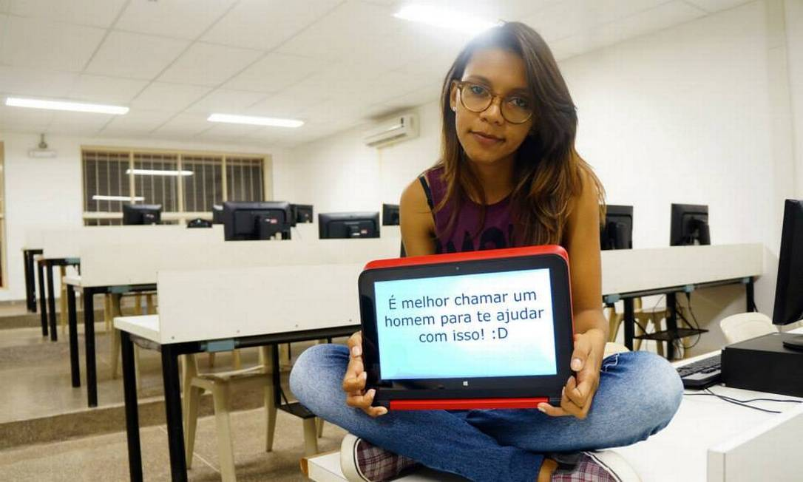
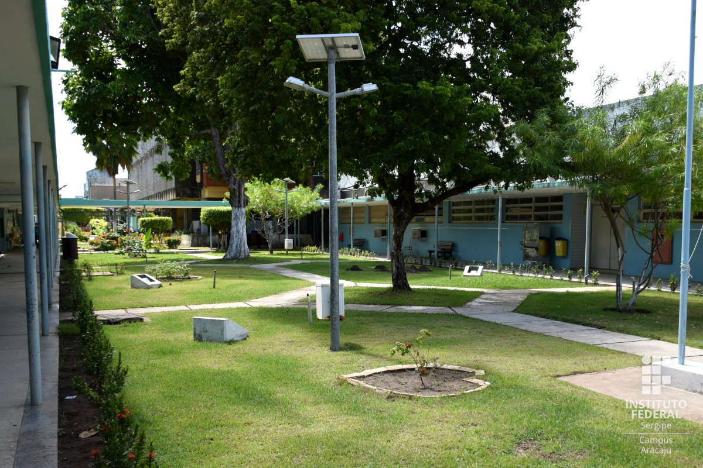

As mulheres estão ocupando cada vez mais espaço na área de TI, e em uma área que está crescendo tanto como essa, as oportunidades continuarão aumentando. Mesmo assim, ainda há muitos desafios a serem enfrentados antes que haja um cenário mais igual entre homens e mulheres.
De acordo com uma pesquisa feita pela Michael Page falta, as razões pelas quais há poucas mulheres na área de TI são:
38%: falta de inscrições por parte das mulheres;
37%: falta de oportunidades para as mulheres;
25%: escassez de talentos femininos com o conhecimento exigido;
17%: falta de experiência necessária para ocupar o cargo.
Falta de incentivos
Pelo fato da área de TI ser predominantemente masculina, pode ser intimidante para mulheres estar em um ambiente no qual são a minoria.
Isso desestimula a participação das mulheres nessa área.
Diferenças de salário
Segundo uma pesquisa da empresa de recursos humanos Revelo, a diferença de salários entre homens e mulheres na área de tecnologia era de 22,4% em 2017 e passou para 12,4% em 2019.
Ausência de representatividade
O fato de não haver muitas mulheres nessa área faz com que não haja modelos nos quais as mulheres possam se inspirar.
Preconceitos
O preconceito e a discriminação são fatores muito graves que desestimulam bastante a tanto a entrada quando a permanência de mulheres nessa área.
Por isso, todas as iniciativas nesse sentido são fundamentais para promover a equidade de gênero e garantir o crescimento das empresas.
Para estimular a diversidade na tecnologia, é importante que várias ações sejam executadas, começando pela educação do dia a dia de trabalho nas empresas.
Alguns exemplos de iniciativas que podem ser adotadas são:
Inclusão de assuntos relacionados à tecnologia desde cedo;
Acesso à informação e qualificação;
Criação de comitês específicos dentro das empresas;
Criação de bolsas de estudos para mulheres na tecnologia.

As mulheres vem superando o tabu, uma das mulheres que faz isso aqui em aracaju se chama Elisangela. Ela é conhecida como a condenadora do curso de informatica do Instituto Federal De Sergipe. Sua habilidade com o controle de banco de dados é extraordinário, Seu forte é sem duvidas nenhuma a criaçao de modelagem de sistemas. Mas não pense que ela não saiba programar, ela já trabalhou com uma das linguagens mais complexa e antiga do mundo de TI. Ela é a prova viva que todos e todas podem trabalhar na area de TI.

LEIA MAIS ARTIGOS